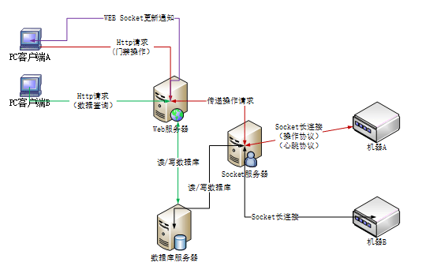
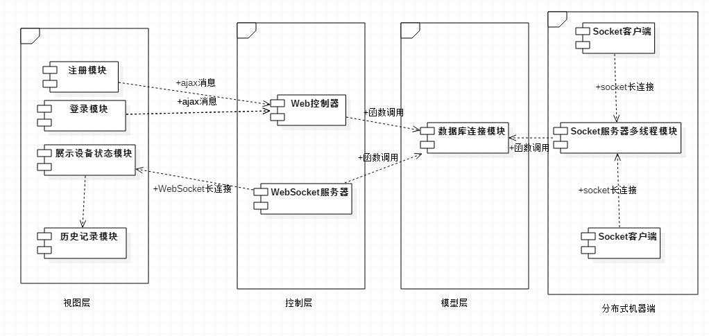
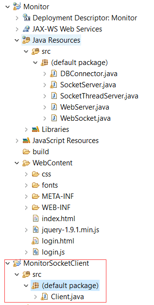
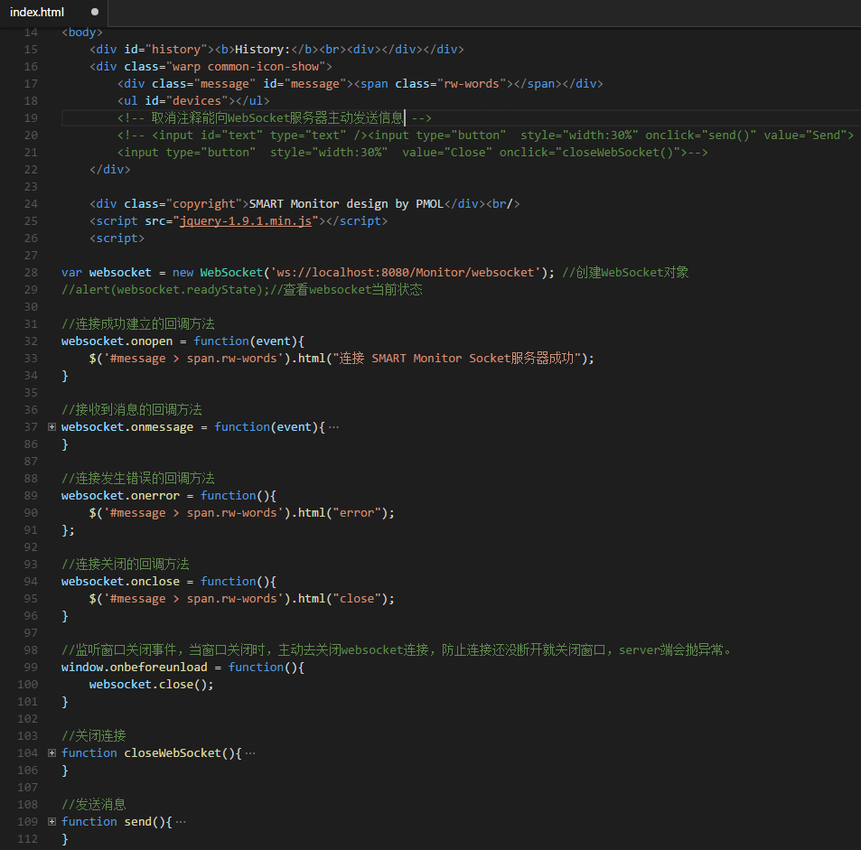
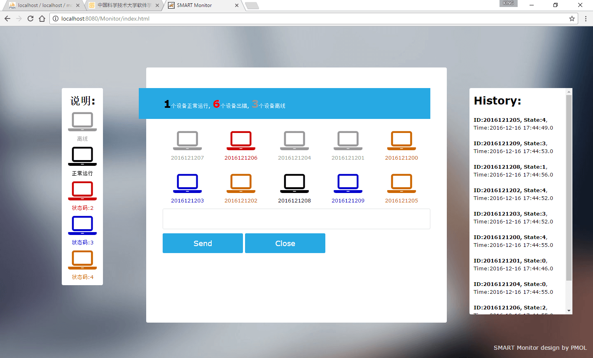
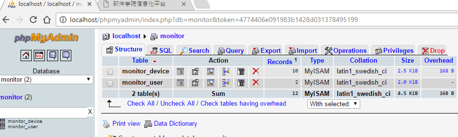
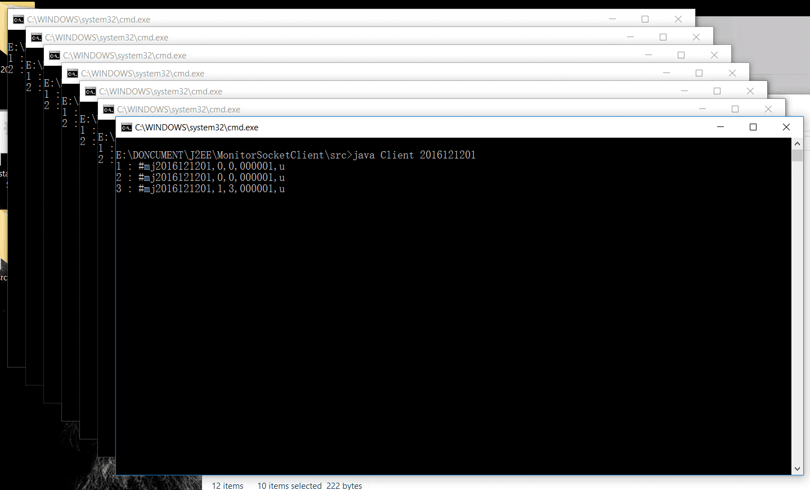

J2EE + WebSocket + MySQL 实现简单监控系统
今天整理以前上课做的实验：
构建一个物联网智能监控系统，使其PC端能实现用户登录，实时监控各设备节点状态、配置设备、接收节点状态变更推送等功能；其分布式机器端能够接收服务器端命令，发送心跳包，发送异常信号，发送设备状态变化命令等。
环境
数据库：MySql 5.1.53
数据库可视化管理软件：Wamp Server
浏览器：Chrome 54.0.2840.87 m (64-bit)
IDE：Eclipse
系统：Win10 64-bit
JDK版本：1.8
Web服务器：Tomcat 7.0.47
原理
利用Socket客户端模拟多个主机，同时通过随机数模拟客户端的状态改变。
–PC端
实现用户登录，实时监控各设备节点状态、配置设备、接收节点状态变更推送等功能。
–分布式机器端
接收服务器端命令，发送心跳包，发送异常信号，发送设备状态变化命令等。
- 分布式机器端不断向socket服务器发送自身设备信息（类似心跳）。（心跳也是数据通信中的一种数据，特殊点在于定时发送，形似心跳而得名。一般来说，当客户端连接到服务端之后，为了确保了解到连接的状态真实性，或者为了防止某些网络在长时间没有数据传输时自动断开，服务端会定时发送一条数据（一般数据内容为空）给客户端。如果在一定时间内（一般选择发送3次心跳的间隔）都没有收到客户端的回复，那么就认为该客户端已经断开了，此时应该踢掉它。）
- 由于分布式机器端是不断地向socket服务器发送设备信息的，socket服务器要不断的访问数据库，这里为了减轻数据库的开销，我们可以在socket服务器与数据库之间分配一个缓冲池。（缓冲池是数据库连接池允许应用程序重用已存在于池中的数据库连接，以避免反复的建立新的数据库连接。这种技术能有效提高应用程序的伸缩性，因为有限的数据库连接能够给大量的客户提供服务。提高了系统性能，避免了大量建立新连接的开销。当打开一个数据库连接时，一个数据库连接池也就创建了。数据库连接池的创建与数据库连接字符串精确的相关（包括空格、大小写）。所有的连接池是根据连接字符串来区分的。在创建一个新的数据库连接时，如果连接字符串不完全相同，将创建不同的连接池。一旦数据库连接池被创建，它将一直存在直到该进程结束。维护一个非活动状态的连接池几乎不需要什么系统开销。）
- 客户端向web服务器发送登录请求并发起数据查询的WebSocket请求。
- WebSocket服务器直接访问数据库。同时像PC客户端实时推送设备数据。
- PC客户端从WebSocket服务器端获取数据后用于展示，同时将历史数据信息保存在界面的History栏中，为了及快速传输，我们选择只保存本客户端请求的连接后开始的历史记录（既得到的历史信息以连接开始的时间为起点）。


数据库设计
数据字典可以理解为集合，是对数据流图中所有元素的描述。它对数据库中的每一个数据定义一个字段，包括对一切动态数据、静态数据的数据结构和相互关系等内容的说明，以保持数据在系统中的一致性，它相当于字典的作用。数据字典是分析阶段的得力工具。
用户表monitor_user表
列名 数据类型 是否为NULL值
用户名user_Name char(15) 否
密码user_Password char(15) 否
设备表monitor_device表
列名 数据类型 是否为NULL值
设备号device_Id char(10) 否
设备状态device_State char(1) 否
门磁状态state char(1) 否
小组号group_Id char(6) 否
时间戳time_Stamp TIMESTAMP 否

这个是Web服务器和Soket客户端的文件组织截图，其中DBConnector是数据库连接类，WebServer是Web服务器端用于登录，注册以及请求验证，转发等功能，WebSocket是WebSocket类，用于与前端保持socket长连接的并定时推送所有的设备状态到客户端。
SocketThreadServer是用多线程实现的一个Socket服务器端，主要工作是利用多线程接收多个客户端的心跳信息，然后判断其状态是否改变，若改变则将改变数据保存到数据库，若不变则不保存数据。
前端展示设备的图标采用了font-awasome的css图标库。

在js脚本中已经为将来的扩展留下了很多的回调方法，比如send方法，可以发送消息至WebSocket服务器，这样就能实现控制或配置更多的设备，而不仅仅是被动接收消息。本示例主要利用了onMessage方法监听从服务器收到消息。
界面展示

主界面，右侧history栏可以看到自打开本客户端后所有设备的历史情况

使用WAMP的一个简易数据库设计

将所有的socket客户端一次性打开模拟